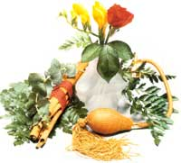

With scented oils from flowers and spices, you can create an array of perfumes that are...
The scent of freshly mowed grass wafts through the window, and suddenly, vividly, you're transported to a summer afternoon in childhood ... the aroma of a familiar dish reaches your nostrils, and once again you're home for the holidays ... a stray whiff of cologne from a passing stranger brings to mind the joy and pain of an old love affair.
Who hasn't had experiences like these? Our sense of smell, though little understood, often overwhelms us with such potent evocations. Since fragrances are so emotionally stirring, aroma therapists believe you can put their subconscious messages to work for you, expressing your moods and influencing those around you. In other words, the cologne you wear can actively affect your life.
Anyone who buys commercially prepared perfumes will testify that the cost of even small amounts can be astronomical. You don't have to pay out large sums of money for fine fragrances, however: You can make your own perfumes!
Perfumers claim that the spectrum of fragrances can be divided into a few basic categories, each with its own character and emotional effects. To create a perfume that's tailored to your individual personality, you need to determine which of these families is your favorite. One way to do so is by rating each of the s cents on the following chart. Think of them as simple odors, rather than as perfumes to wear, and check the appropriate columns.
Notice where most of your "strongly like" ratings fall. People generally find that their favorite s cents belong in one of the following categories:
Numbers 1-5 correspond to the natural animal essences of musk, ambergris, civet, and the less familiar castoreum. These blunt, sultry odors may seem unpleasant or even rancid in their pure state (folklore claims that sniffing natural raw musk can be fatal!), but weaker synthetic forms are almost always substituted for these rare, costly secretions. In perfumes, they impart a dark note of primitive, exotic mystery. It has even been said that, since they're similar to human secretions, they can inspire desire!
Numbers 6-10 belong to the spicy, woody, bitter family. Spices such as cinnamon and clove are the most familiar members of this group-which also includes cedar, oak moss, sandalwood, vetiver, and myrrh, as well as many seeds, roots, and barks. Alone, these fragrances can be astringent, acidic, bitter, or acrid-but when they're blended with other s cents, they have a refreshing, activating quality. To appreciate how invigorating they are, just add a dash of cinnamon to your ground coffee. As it brews, it will spread a warm, wake-up aroma through the house.
The third group, Numbers 11-15, represents the fresh, green, saplike, herbal fragrances. These healthy, clean odors include pine, eucalyptus, camphor, citrus, lavender, and balsam, as well as some culinary herbs such as marjoram, basil, and rosemary. Although pure herbal essences can be obnoxious and overpowering (witness pine-scented cleaning agents and camphorated mothballs), they add a pleasantly brisk "edge" when blended in perfumes. Many commercial men's colognes, with their stimulating sharpness, are based on this "green" group.
The last five fragrances, Numbers 16-20, represent the floral family. Flower s cents can be soft, sweet, and mellow, but in concentrated forms, they can be heavy and cloying, causing headaches or nausea, and dulling the senses. When properly balanced, however, floral fragrances are said to be psychologically calming, and can alleviate stress, induce relaxation, and even produce mild euphoria. Hundreds of fine feminine perfumes are blended of floral essences. With the exception of the lighter, pollenlike lily s cents, such as lily of the valley and daffodil, flower perfumes communicate serenity and maturity.
Most commercial perfumes are based on one of these four families. To provide harmony and excitement, blenders-other fragrances which may belong to the same family or may contrast with it-are mixed with the main scent. Solvents (usually called diluents) cut and thin the basic oils, while fixatives such as orrisroot and benzoin are added to preserve the volatile essences. Using these same elements and procedures, you can create your own signature perfume.
All perfumes begin with fragrant essential oils as their primary ingredients. These oils are available from herb and natural food stores, specialty shops, and a number of mail-order houses (see the end of this article for a list of such outlets).
Once you've chosen your favorite fragrance family and have acquired some essential oils, start experimenting! Just place a drop of your main scent on your hand or wrist, then mix in an oil blender and allow the odors to mingle together for a while. Give the result the sniff test. Is it right for you? Wash off each combination thoroughly before trying a new one-and remember, since the olfactory sense is quickly numbed by fatigue or overexposure, don't experiment for too long at one time.
To get you started, here are several popular combinations. Rose-lavender or rose-cinnamon are blends found in the classic rose potpourris (for a nice extra touch, add a dash of musk). Jasmine and orange blossoms make a sweet floral mixture, while a more delicate flowery scent results from combining musk or ambergris with rose or daffodil. For a "greener" main scent, use the heavy Indian fragrance patchouli, which makes a good partner for lavender, rose, and the animal essences. If you're making men's cologne, you might prefer to concentrate on the green and spicy families, blended with hints of the animal essences. Balsam, cedar, or sandalwood, for example, mixed with cinnamon and musk, make bright masculine fragrances.
As you experiment, remember that a sophisticated perfume-and really, do you want to make anything less?-is a blend of different fragrances, rather than a single essence. The combination should be well balanced, with no one scent predominating.
Once you've found a combination that pleases you, mix a small supply, using glass eyedroppers or tiny perfumer's runnels if your hands tremble... and be sure to make careful note of the amounts you use in achieving the effect you like. Store the oil in a cool place in a colored glass bottle: If it's kept from air and light, no fixative will be needed.
Use your blended oils very sparingly as perfume, bath oil, or room freshener.
FORMULAS FOR FRAGRANCE
All perfume concoctions are made more "by nose" than by recipe, but it's helpful to have some idea of workable ratios when making scented products for the household. The following directions are meant for commercially distilled oils; if you've made your own, just increase the amount specified. Fixatives, diluents, and other supplies are available from your local natural food stores, scent shops, or pharmacies.
Cologne
One part oil Six parts perfume diluent...or vodka One part fixative (liquid benzoin or powdered orrisroot)
After-Bath Splash
One part oil Ten parts perfume diluent or vodka One part fixative
Bath Powder
Arrowroot or cornstarch A few drops of scented oil
Massage Oil
1/4 oz. fragrance oil 4 oz. unscented oil: wheat germ (high in vitamin E, to fight wrinkling) and/or apricot oil (an excellent moisturizer) For a sensuous rubdown, warm this oil before using it.
The following are mail-order sources for herbs, oils, and perfumery supplies:
Aphrodisia
282 Bleecker St.
New York, NY 10014
212/989-6440
catalog: $3.00
Caswell Massey, Ltd.
518 Lexington Ave.
New York, NY 10017
212/755-2254
catalog: free
Dr. Michael's Products
5109 Northwestern Ave.
Chicago, IL 60625
312/271-7738
catalog: $1.50
Indian a Botanical Gardens
P.O. Box 5
Hammond, IN 46325
219/931-2480
catalog: free (50 cents postage)
Meadowbrook Herb Farm
Rt. 138
Wyoming, RI 02898
401/539-7603
catalog: $1.00
Nature's Herb Co.
281 Ellis St.
San Francisco, CA 94102
415/474-2756
catalog: free
Faith Mountain Herbs
Dept. TMEN, Main St.
Sperryville, VA 22740
703/987-8824
catalog: $2.00 (refundable)
Herbal Effect
P.O. Box 6
Carmel Valley, CA 93924
408/375-6313
catalog: $1.00
Penn Herb Co.
603 N. 2nd St.
Philadelphia, PA 19123
215/925-3336
catalog: $1.00 (refundable)
Stillridge Herb Farm
10370 Rt. 99
Woodstock, MD 21163
301/465-8348
catalog: 75 cents
The Soap Opera
319 State St.
Madison, WI 55703
800/251-BATH (Wisconsin)
800/251-SOAP (other)
catalog: $3.50 (free with order)
You don't have to pay $100 an ounce to smell delicious, and you don't have to settle for cheap, alcohol-laden synthetics, either. Why worry about the carcinogens, colors, and chemicals in factory-made scented creams and powders? You can make those fragrant products yourself at a fraction of the retail cost, and have a lot of fun doing it. And when you're done, the results will be distinctly, definitely ... essentially! ... yours.
|
 STAFF PHOTOS |
|
|